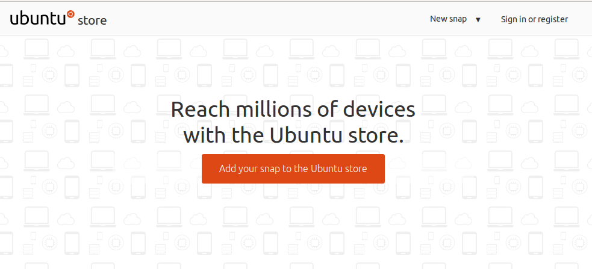
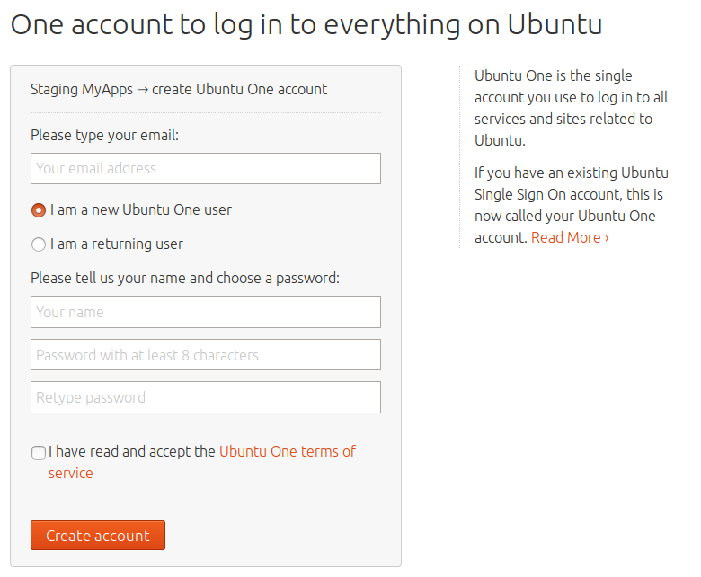

snapcraft is our tool of choice to build snaps. It reads a simple, declarative file and runs the build for you. You will get to play with snapcraft, see how easy it is to use and create your first snap along the way.

What you'll learn
- How to install snapcraft.
- How to create a new project.
- How to build a snap.
- How to declare snap metadata.
- How app are made of parts.
- And more...
What you'll need
- Any supported snap GNU/Linux distribution .
- Some very basic knowledge of command line use, know how to edit files.
- We expect you to know how to install snaps, what they are, the store notions that we are going to use. The "basic snap usage" codelab is a good introduction to this.
How will you use this tutorial?
What is your current level of experience working with snap?
If you are on Ubuntu 16.04 LTS or Ubuntu 16.10, getting all the required tools is very easy.
Now simply run:
$ sudo apt install snapcraft build-essential
This will install snapcraft and some additional build tools we are going to need for our specific example. As snapcraft uses a plugin architecture (to let you build snaps from all kinds of projects), some required build tools need to be installed separately. In our case, that's build-essential.
We're all set now, let's get cracking and let's build your first snap!
Starting the project
As we are starting from scratch, the first steps are to create a directory and use a simple template for your snap definition. In the terminal, just run:
$ mkdir hello $ cd hello ~/hello$ snapcraft init Created snapcraft.yaml. Edit the file to your liking or run `snapcraft` to get started
snapcraft created a simple snapcraft.yaml file, in which you declare how the snap is built and which properties it exposes to the user. We will obviously need to tweak a bit for the snap we want to build.
Describing the snap
Let's take a look at the top part of your snapcraft.yaml file. It should look somewhat as shown below:
name: my-snap-name # you probably want to 'snapcraft register <name>'
version: '0.1' # just for humans, typically '1.2+git' or '1.3.2'
summary: Single-line elevator pitch for your amazing snap # 79 char long summary
description: |
This is my-snap's description. You have a paragraph or two to tell the
most important story about your snap. Keep it under 100 words though,
we live in tweetspace and your description wants to look good in the snap
store.
grade: devel # must be 'stable' to release into candidate/stable channels
confinement: devmode # use 'strict' once you have the right plugs and slotsThis part of snapcraft.yaml is mandatory and describes the very basics of the snap metadata. Let's go through this line by line:
- name describes the name of the snap.
- version is the current version of the snap.
- summary is a short, one-line summary or tag-line for your snap.
- description should provide the user with enough information to judge if the snap is going to be useful to them. This description can span over multiple lines if prefixed with |.
- grade can be used by the publisher to indicate the quality confidence in the build. The store will prevent publishing "devel" grade builds to stable channels.
- confinement can be either
devmodeorstrict. We'll get to this bit later on again. When starting out with a new snap, it's always a good idea to leave it indevmode.
Ok. So much for the basics. Let's customise this for your very own snap. Please change the top of the file to be:
name: hello
version: "2.10"
summary: GNU Hello, the "hello world" snap
description: |
GNU hello prints a friendly greeting.
grade: devel
confinement: devmodeSimple, isn't it?
Adding a part
A snap can consist of multiple parts. Here are a few examples of this:
- Snaps with separate logical parts, e.g. a server snap, which contains a web server, a database and the application itself or a game which ships the game engine and game data for three different games, each one being defined in its own part.
- Snaps with parts which come from different locations.
- Parts which are built in a different way.
Our hello snap will be nice and simple and just consist of one part for now. In the following pages we are going to extend it step by step.
Two must-haves for every part are the source and plugin definition. Think of it as the what (source) and how (plugin). As source you can for example pick a source repository (like git), a tarball, or a local directory. snapcraft comes with a lot of plugins which can build almost any conceivable project type (e.g. autotools, cmake, go, maven, nodejs, python2, python3, etc).
To build hello this, simply add the following to your snapcraft.yaml file:
parts:
gnu-hello:
source: http://ftp.gnu.org/gnu/hello/hello-2.10.tar.gz
plugin: autotoolsIn the list of parts, we add simply one called gnu-hello (the part name can take whatever identifier you like). As source we simply use a tarball from the GNU project's ftp server - snapcraft will download and extract it automatically. As plugin you pick autotools which uses the pretty common ./configure && make && make install steps to build the part under the hood.
Now on to the exciting part: let's build it! All you need to do here is:
~/hello$ snapcraft [...] Staging gnu-hello Priming gnu-hello Snapping 'hello' | Snapped hello_2.10_amd64.snap
You just built your first snap! Congratulations! Let's install it now.
~/hello$ sudo snap install --devmode hello_2.10_amd64.snap hello 2.10 installed ~/hello$ snap list Name Version Rev Developer Notes hello 2.10 x1 devmode ubuntu-core 16.04.1 352 canonical -
Using --devmode is generally a good idea, as it's best-practice when creating new snaps. When developing, security requirements can get in our way in the beginning. It's better to focus on getting the application ready first. This way you focus on the build first, get a snap working quickly and can think about things like confinement in a later step.
Ok, let's try to execute it and type hello to get it working:
On ubuntu desktop, you will get:
~/hello$ hello The program 'hello' can be found in the following packages: * hello * hello-traditional Try: sudo apt install <selected package>
On ubuntu core:
~/hello$ hello hello: command not found
The command doesn't exist despite being part of our snap and installed! Indeed, snaps don't expose anything to the user by default (command, services...). We have to do this explicitly and that's exactly what you are going to tackle in the next step!
Defining commands
In order for services and commands to be exposed to users, you need to specify them in snapcraft.yaml of course! This will take care of a couple of things for you:
- It will make sure that services are automatically started/stopped.
- All commands will be namespaced, so that you could for example install the same snap from different publishers and still be able to run the snaps separately.
- You can define which security permissions commands and services need.
- And more.
Exposing the hello command is pretty painless, so let's do that first. All you need to do, is to add the following declaration to your snapcraft.yaml file:
apps:
hello:
command: bin/helloThis defines an app named hello, which points to the executable bin/hello in the directory structure shipped by the snap.
This way, the hello command will be available to our users.
Iterating over your snap
So the command is defined, let's rebuild the snap to see if it's working now. Instead of running snapcraft, here's a technique to quickly iterate over your snap during development:
~/hello$ snapcraft prime Skipping pull gnu-hello (already ran) Skipping build gnu-hello (already ran) Skipping stage gnu-hello (already ran) Skipping prime gnu-hello (already ran) ~/hello$ sudo snap try --devmode prime/ hello 2.10 mounted from ~/hello/prime
In the steps above we first tell snapcraft to run the build up until the "prime" step. This is where all parts are built and put together for snap creation. Think of it as the extracted contents of the snap package. These we can easily give to snap try which installs an unpacked snap into the system for testing purposes. The unpacked snap content continues to be used even after installation, so non-metadata changes (e.g. snap name, etc.) there go live instantly. This makes things a lot quicker and easier to test.
Things should be working now, right?
~/hello$ hello Hello, world! ~/hello$ which hello /snap/bin/hello
Well done! Congratulations - this is your first working snap!
Let's add another part to make the snap a bit more interesting. In the parts definition, add:
gnu-bash:
source: http://ftp.gnu.org/gnu/bash/bash-4.3.tar.gz
plugin: autotoolsYou will notice that this part (named gnu-bash) works very much like the gnu-hello part from the steps before. It downloads a tarball too and builds it using the autotools plugin.
You learned this during the step before, we still need to define the command we want to expose. Let's do this now. In the apps definition, add:
bash:
command: bashThis time the command name is different from the snap name. By default, all commands are exposed to the user as <snap-name>.<command-name>. This binary will thus be hello.bash. That way we will avoid a clash with /bin/bash (system binaries trump binaries shipped by snaps) or any other snaps shipping a bash command. However, maybe you remember, the first binary is simply named hello. This is due to the simplification when <command-name> equals <snap-name>. Instead of hello.hello, we have the command condensed to simply hello.
Our snap will thus result in two binaries being shipped: hello and hello.bash. Now execute
~/hello$ snapcraft prime
to run the build. Only the gnu-bash part needs to be built now (as nothing changed in the other part), which should be relatively quick.
Our first build failure
Oh no! The build stops with:
Parts 'gnu-bash' and 'gnu-hello' have the following file paths in common which have different contents: share/info/dir
What does this mean? Both our gnu-hello and gnu-bash parts want to ship a version of share/info/dir with differing contents. As this clashes, we have to solve this somehow. In general, there are two options in cases like this:
- Shipping only one from one of the two parts. If we find the file is not needed or they're identical, we can tell snapcraft not to ship either using the
snapandstagekeywords. - We move one of the files to a different location.
Luckily the second option is easy to implement and it's nice being able to ship both. The ./configure script of bash comes with an --infodir option, which will set the new location of the info directory. Let's use /var/bash/info. All you need to do is make your gnu-bash definition look like this:
gnu-bash:
source: http://ftp.gnu.org/gnu/bash/bash-4.3.tar.gz
plugin: autotools
configflags: ["--infodir=/var/bash/info"]This is how you tell snapcraft to pass --infodir=/var/bash/info as an argument to ./configure during the build.
Now just run
~/hello$ snapcraft clean gnu-bash -s build Skipping cleaning priming area for gnu-bash (already clean) Skipping cleaning staging area for gnu-bash (already clean) Cleaning build for gnu-bash ~/hello$ snapcraft prime [...] Skipping build gnu-hello (already ran) Staging gnu-bash Staging gnu-hello Priming gnu-bash Priming gnu-hello
Here you clean just the build step of the gnu-bash part, so the source does not need to be re-downloaded. Then the build is run again and it passes! Now let's see if our new commands work fine.
~/hello$ sudo snap try --devmode prime hello 2.10 mounted from /home/daniel/hello/prime ~/hello$ hello Hello, world! ~/hello$ hello.bash bash-4.3$ env [ Environment variables list ] bash-4.3$ exit exit
Excellent work! You have it all nice and working!
One last thing you might want to do before the snap is ready for wider consumption is to remove the devmode status.
For this to be declared in your snap, let's set confinement to strict:
confinement: strictNow let's build the snap and install it! We are going to call snapcraft without prime this time and snap install (as opposed to snap try earlier) to try everything under normal conditions. You should also stop using the --devmode switch to really test it under confinement:
~/hello$ snapcraft Skipping pull gnu-bash (already ran) Skipping pull gnu-hello (already ran) Skipping build gnu-bash (already ran) Skipping build gnu-hello (already ran) Skipping stage gnu-bash (already ran) Skipping stage gnu-hello (already ran) Skipping prime gnu-bash (already ran) Skipping prime gnu-hello (already ran) Snapping 'hello' - Snapped hello_2.10_amd64.snap
Let's try to install it!
~/hello$ sudo snap install hello_2.10_amd64.snap error: cannot find signatures with metadata for snap "hello_2.10_amd64.snap"
Oh, that didn't go well! Indeed, you are trying to install a snap which isn't signed by the store. Previously, we did local installations via devmode which implied (in addition to run without confinement) that unsigned local snap was ok to be installed on your system. Here, as we won't specify devmode anymore, we need to be more explicit and indicate that it's ok to install this unsigned snap thanks to the --dangerous option.
~/hello$ sudo snap install hello_2.10_amd64.snap --dangerous hello 2.10 installed
To complete our tests, let's see if the command still work as expected:
~/hello$ hello Hello, world! ~/hello$ hello.bash bash-4.3$ ls /home ls: cannot open directory '/home': Permission denied bash-4.3$ exit
What's happening here? Your snap is not broken, it's confined now, so can only access its own respective directories.
You are done. This snap is ready for publication!
Apps can easily be uploaded to the store via My Apps. Registering an account is easy, so let's do that first.
Registering an account
Open My Apps in your browser and follow the instructions to register an account:


Enter your email address, name and password, accept the terms of service and create the account. Remember as well to choose a namespace on myapps before registering your snap.
It's then time for you to get authenticated from snapcraft:
~/hello$ snapcraft login Enter your Ubuntu One SSO credentials. Email: myemail@provider.com Password: One-time password (just press enter if you don't use two-factor authentication): Authenticating against Ubuntu One SSO. Login successful.
You can logout any time with simply snapcraft logout.
Register a new snap name
Before being able to upload any snap, you need to register (meaning: reserving) a name. That way, this snap name is yours, and you will be able to upload snaps matching this name.
To reserve a new name, simply try:
~/hello$ snapcraft register hello-<yourname> snapcraft register hello-<yourname> Registering hello-<yourname>. Congratulations! You're now the publisher for 'hello-<yourname>'.
If the name is already reserved, you can either despite that name or just pick a new one.
If you changed your snap name while registering, you need to rebuild this snap with that new name:
- change your snap name in snapcraft.yaml:
name: hello-didrocks [...]
- as we want to publish it in the candidate channel, we need to set its grade to stable:
grade: stable
- and just rebuild your snap with:
~/hello$ snapcraft Skipping pull gnu-bash (already ran) Skipping pull gnu-hello (already ran) Skipping build gnu-bash (already ran) Skipping build gnu-hello (already ran) Skipping stage gnu-bash (already ran) Skipping stage gnu-hello (already ran) Skipping prime gnu-bash (already ran) Skipping prime gnu-hello (already ran) Snapping 'hello-didrocks' - Snapped hello-didrocks_2.10_amd64.snap
Upload your snap
It's high time to make this snap available to the world!
Let's try to publish it to the candidate channel for now:
~/hello$ snapcraft push hello-didrocks_2.10_amd64.snap --release=candidate Uploading hello-didrocks_2.10_amd64.snap. Uploading hello-didrocks_2.10_amd64.snap [================================] 100% Ready to release!| Revision 1 of 'hello-didrocks' created. The candidate channel is now open. Channel Version Revision --------- --------- ---------- stable - - candidate 2.10 1 beta ^ ^ edge ^ ^
You should receive an email telling you that your snap is pending review (automatic checking). If you are not using any reserved interfaces and security checks are passing, it would be available to the user (in the candidate, beta and edge channels in this case) to your users via a simple:
$ sudo snap install hello-didrocks --channel=candidate
From here, if you are happy with the testing of your snap, you can snapcraft push again the same file, omitting --release option to publish a revision 2 in the stable channel. You can use the website as well and check the box for the channels you want this revision 1 to be published to.
Remember that snaps with confinement: devmode can't be published to the stable or candidate channels.
Easy, wasn't it?
Congratulations! You made it!
By now you should successfully have built your first snap, fixed build issues, exposed user commands, learned about uploading snaps to the store and found out about a lot of other useful details (plugins, snapcraft's help system, release channels in the store, etc.). Snapcraft is easy to use as it is declarative and just uses a few different keywords, so it's memorisable quite quickly. After using it just a couple of times, it should become second nature to you.
Next steps
- You can have a look at build a nodejs service which is the logical follow up of that codelab, bringing your some debugging techniques, more information on confinement and how to package some snap application as a service.
- Learn some more advanced techniques on how to use your snap system looking for our others codelabs!
- Join the snapcraft.io community by subcribing to our mailing list.
Further readings
- Snapcraft.io documentation is a good place to start reading the whole snap and snapcraft documentation.
- Snapcraft syntax reference, covering various available options like the daemon ones.
- Check how you can contact us and the broader community.